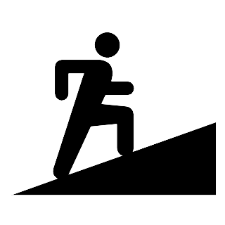
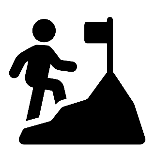
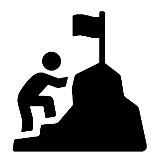

Prêt à camper
Le Parc National de la Jacques-Cartier offre différentes options qui sauront satisfaire les campeurs débutant autant que les plus aguérris. Nos chalets vous offriront une expérience sans tracas avec leur cuisines fournies et leur réfrigérateur. Même pas besoin de trimballer votre matelas puisque les nôtres sont compris dans la location. Ils sont parfaits pour une fin de semaine d'évasion romantique en pleine nature!
Camping sauvage
Pour les visiteurs à la recherche d'expérience plus en nature, nos terrains de camping vous offriront intimité et confort. Chaque site est équippé d'un foyer extérieur, d'une table à pique-nique. Vous souhaitez garder contact avec la civilisation? Certains sites vous donnent accès à l'électricité. Renseignez-vous auprès de nos commis!
Observation de la faune
Que ce soit sur nos sentiers ou à l'un de nos nombreux observatoires, venez admirer la faune et la flore du Parc National de la Jacques-Cartier. Avec une simple paire de jumelles, vous serez estomaqués par la diversité de notre flore. Bien plus que des sapins et des épinettes, vous y retrouverez nombre d'espèces que vous ne retrouverez nulle part ailleurs.
Localisation
|
Randonnée
13 sentiers sont disponibles pour vous dégourdir les jambes. De niveau débutant à difficile, vous serez en mesure de vous évader pour quelques heures! |
|||
| Niveaux | Sentiers | ||
|  | Debutant |
|
|
|  | Moyen |
|
|
|  | Avancé |
|
|
Pour un avant-goût du parc, cliquez sur le bouton!